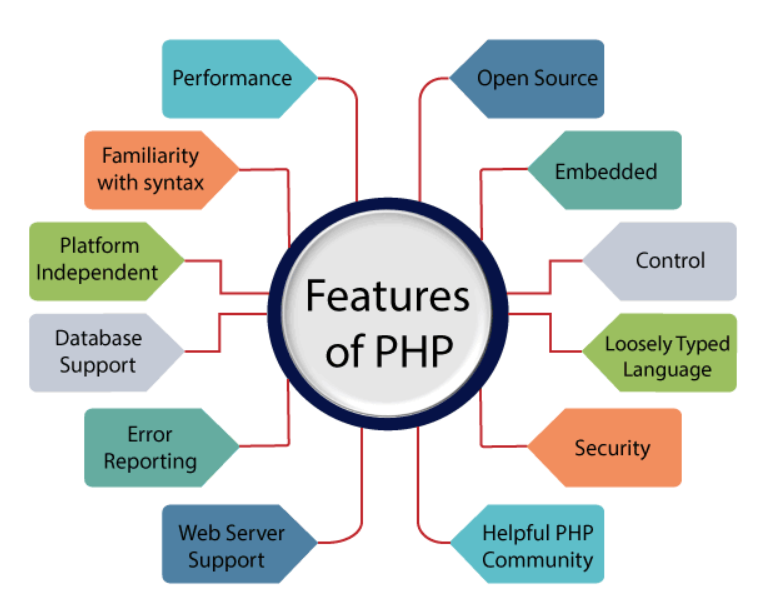

PHP Tutorial
PHP tutorial for beginners and professionals provides in-depth knowledge of PHP scripting language. Our PHP tutorial will help you to learn PHP scripting language easily.
This PHP tutorial covers all the topics of PHP such as introduction, control statements, functions, array, string, file handling, form handling, regular expression, date and time, object-oriented programming in PHP, math, PHP MySQL, PHP with Ajax, PHP with jQuery and PHP with XML.
What is PHP?
PHP is an open-source, interpreted, and object-oriented scripting language that can be executed at the server-side. PHP is well suited for web development. Therefore, it is used to develop web applications (an application that executes on the server and generates the dynamic page.).
PHP was created by Rasmus Lerdorf in 1994 but appeared in the market in 1995. PHP 7.4.0 is the latest version of PHP, which was released on 28 November. Some important points need to be noticed about PHP are as followed:
- • PHP stands for Hypertext Preprocessor.
- • PHP is an interpreted language, i.e., there is no need for compilation.
- • PHP is faster than other scripting languages, for example, ASP and JSP.
- • PHP is a server-side scripting language, which is used to manage the dynamic content of the website.
- • PHP can be embedded into HTML.
- • PHP is an object-oriented language.
- • PHP is an open-source scripting language.
- • PHP is simple and easy to learn language.
Why use PHP
PHP is a server-side scripting language, which is used to design the dynamic web applications with MySQL database.
- • It handles dynamic content, database as well as session tracking for the website.
- • You can create sessions in PHP.
- • It can access cookies variable and also set cookies.
- • It helps to encrypt the data and apply validation.
- • PHP supports several protocols such as HTTP, POP3, SNMP, LDAP, IMAP, and many more.
- • Using PHP language, you can control the user to access some pages of your website.
- As PHP is easy to install and set up, this is the main reason why PHP is the best language to learn.
- • PHP is simple and easy to learn language.
PHP Features
PHP is very popular language because of its simplicity and open source. There are some important features of PHP given below:
Performance:
PHP script is executed much faster than those scripts which are written in other languages such as JSP and ASP. PHP uses its own memory, so the server workload and loading time is automatically reduced, which results in faster processing speed and better performance.
Open Source:
PHP source code and software are freely available on the web. You can develop all the versions of PHP according to your requirement without paying any cost. All its components are free to download and use.
Familiarity with syntax:
PHP has easily understandable syntax. Programmers are comfortable coding with it.s
Embedded:
PHP code can be easily embedded within HTML tags and script.
Platform Independent:
PHP is available for WINDOWS, MAC, LINUX & UNIX operating system. A PHP application developed in one OS can be easily executed in other OS also.
Database Support:
PHP supports all the leading databases such as MySQL, SQLite, ODBC, etc.
Error Reporting -
PHP has predefined error reporting constants to generate an error notice or warning at runtime. E.g., E_ERROR, E_WARNING, E_STRICT, E_PARSE.
Loosely Typed Language:
PHP allows us to use a variable without declaring its datatype. It will be taken automatically at the time of execution based on the type of data it contains on its value.
Web servers Support:
PHP is compatible with almost all local servers used today like Apache, Netscape, Microsoft IIS, etc.
Security:
PHP is a secure language to develop the website. It consists of multiple layers of security to prevent threads and malicious attacks.
Web Development
PHP is widely used in web development nowadays. PHP can develop dynamic websites easily. But you must have the basic the knowledge of following technologies for web development as well.
- • HTML
- • CSS
- • JavaScript
- • Ajax
- • XML and JSON
- • jQuery
Prerequisite
Before learning PHP, you must have the basic knowledge of HTML, CSS, and JavaScript. So, learn these technologies for better implementation of PHP.
- • HTML - HTML is used to design static webpage.
- • CSS - CSS helps to make the webpage content more effective and attractive.
- • JavaScript - JavaScript is used to design an interactive website.
If you want to download and install PHP
Click here